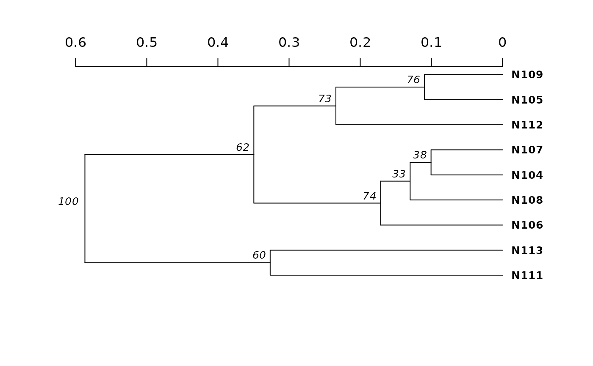
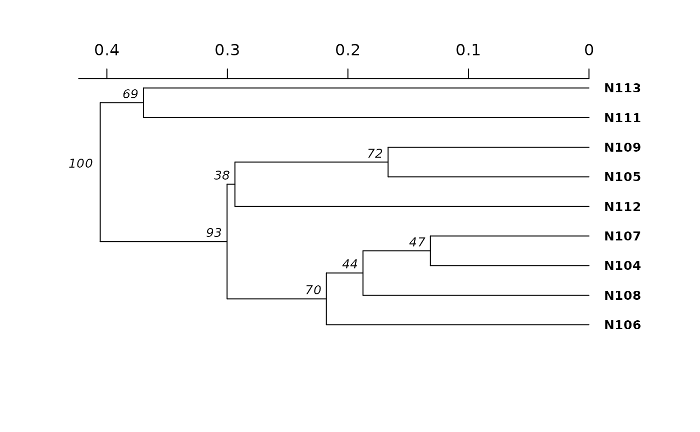

Calculate a dendrogram with bootstrap support using any distance applicable to genind or genclone objects.
Source:R/bootstraping.R
aboot.RdCalculate a dendrogram with bootstrap support using any distance applicable to genind or genclone objects.
Usage
aboot(
x,
strata = NULL,
tree = "upgma",
distance = "nei.dist",
sample = 100,
cutoff = 0,
showtree = TRUE,
missing = "mean",
mcutoff = 0,
quiet = FALSE,
root = NULL,
...
)Arguments
- x
a genind-class, genpop-class, genclone-class, adegenet::genlight, snpclone or matrix object.
- strata
a formula specifying the strata to be used to convert x to a genclone object if x is a genind object. Defaults to
NULL. See details.- tree
a text string or function that can calculate a tree from a distance matrix. Defaults to "upgma". Note that you must load the package with the function for it to work.
- distance
a character or function defining the distance to be applied to x. Defaults to
nei.dist().- sample
An integer representing the number of bootstrap replicates Default is 100.
- cutoff
An integer from 0 to 100 setting the cutoff value to return the bootstrap values on the nodes. Default is 0.
- showtree
If
TRUE(Default), a dendrogram will be plotted. IfFALSE, nothing will be plotted.- missing
any method to be used by
missingno(): "mean" (default), "zero", "loci", "genotype", or "ignore".- mcutoff
a value between 0 (default) and 1 defining the percentage of tolerable missing data if the
missingparameter is set to "loci" or "genotype". This should only be set if the distance metric can handle missing data.- quiet
if
FALSE(default), a progress bar will be printed to screen.- root
is the tree rooted? This is a parameter passed off to
ape::boot.phylo(). If thetreeparameter returns a rooted tree (like UPGMA), this should beTRUE, otherwise (like neighbor-joining), it should be false. When set toNULL(default), the tree is considered rooted ifape::is.ultrametric()is true.- ...
any parameters to be passed off to the distance method.
Value
an object of class ape::phylo().
Details
This function automates the process of bootstrapping genetic data to
create a dendrogram with bootstrap support on the nodes. It will randomly
sample with replacement the loci of a gen (genind/genpop) object or the columns of a
numeric matrix, assuming that all loci/columns are independent. The
process of randomly sampling gen objects with replacement is carried out
through the use of an internal class called
bootgen. This is necessary due to the fact that columns in
the genind matrix are defined as alleles and are thus interrelated. This
function will specifically bootstrap loci so that results are biologically
relevant. With this function, the user can also define a custom distance to
be performed on the genind or genclone object. If you have a data frame-like
object where all of the columns are independent or pairs of columns are
independent, then it may be simpler to use ape::boot.phylo() to calculate
your bootstrap support values.
the strata argument
There is an argument called strata. This argument is useful for when
you want to bootstrap by populations from a adegenet::genind()
object. When you specify strata, the genind object will be converted to
adegenet::genpop() with the specified strata.
Note
prevosti.dist() and diss.dist() are exactly the
same, but diss.dist() scales better for large numbers of
individuals (n > 125) at the cost of required memory.
missing data
Missing data is not allowed by many of the distances. Thus, one of
the first steps of this function is to treat missing data by setting it to
the average allele frequency in the data set. If you are using a distance
that can handle missing data (Prevosti's distance), you can set
missing = "ignore" to allow the distance function to handle any
missing data. See missingno() for details on missing
data.
Bruvo's Distance
While calculation of Bruvo's distance
is possible with this function, it is optimized in the function
bruvo.boot().
References
Kamvar ZN, Brooks JC and Grünwald NJ (2015) Novel R tools for analysis of genome-wide population genetic data with emphasis on clonality. Frontiers in Genetics 6:208. doi:10.3389/fgene.2015.00208
Examples
data(nancycats)
nan9 <- popsub(nancycats, 9)
set.seed(9999)
# Generate a tree using nei's distance
neinan <- aboot(nan9, dist = nei.dist)
#> Warning: Infinite values detected.
#> Warning: Infinite values detected.
#> Warning: Infinite values detected.
#> Warning: Infinite values detected.
#> Warning: Infinite values detected.
#> Warning: Infinite values detected.
#> Warning: Infinite values detected.
#> Warning: Infinite values detected.
#> Warning: Infinite values detected.
#> Warning: Infinite values detected.
#> Warning: Infinite values detected.
#> Warning: Infinite values detected.
#> Warning: Infinite values detected.
#> Warning: Infinite values detected.
#> Warning: Infinite values detected.
#> Warning: Infinite values detected.
#> Warning: Infinite values detected.
#> Warning: Infinite values detected.
#> Warning: Infinite values detected.
#> Warning: Infinite values detected.
#> Warning: Infinite values detected.
#> Warning: Infinite values detected.
#> Warning: Infinite values detected.
#> Warning: Infinite values detected.
#> Warning: Infinite values detected.
#> Warning: Infinite values detected.
#> Warning: Infinite values detected.
#> Warning: Infinite values detected.
#> Warning: Infinite values detected.
#> Warning: Infinite values detected.
#> Warning: Infinite values detected.
#> Warning: Infinite values detected.
#>
Running bootstraps: 100 / 100
#> Calculating bootstrap values... done.

set.seed(9999)
# Generate a tree using custom distance
bindist <- function(x) dist(tab(x), method = "binary")
binnan <- aboot(nan9, dist = bindist)
#>
Running bootstraps: 100 / 100
#> Calculating bootstrap values... done.

if (FALSE) { # \dontrun{
# Distances from other packages.
#
# Sometimes, distance functions from other packages will have the constraint
# that the incoming data MUST be genind. Internally, aboot uses the
# bootgen class ( class?bootgen ) to shuffle loci, and will throw an error
# The function bootgen2genind helps fix that. Here's an example of a function
# that expects a genind class from above
bindist <- function(x){
stopifnot(is.genind(x))
dist(tab(x), method = "binary")
}
#
# Fails:
# aboot(nan9, dist = bindist)
## Error: is.genind(x) is not TRUE
#
# Add bootgen2genind to get it working!
# Works:
aboot(nan9, dist = function(x) bootgen2genind(x) %>% bindist)
# AFLP data
data(Aeut)
# Nei's distance
anei <- aboot(Aeut, dist = nei.dist, sample = 1000, cutoff = 50)
# Rogers' distance
arog <- aboot(Aeut, dist = rogers.dist, sample = 1000, cutoff = 50)
# This can also be run on genpop objects
strata(Aeut) <- other(Aeut)$population_hierarchy[-1]
Aeut.gc <- as.genclone(Aeut)
setPop(Aeut.gc) <- ~Pop/Subpop
Aeut.pop <- genind2genpop(Aeut.gc)
set.seed(5000)
aboot(Aeut.pop, sample = 1000) # compare to Grunwald et al. 2006
# You can also use the strata argument to convert to genpop inside the function.
set.seed(5000)
aboot(Aeut.gc, strata = ~Pop/Subpop, sample = 1000)
# And genlight objects
# From glSim:
## 1,000 non structured SNPs, 100 structured SNPs
x <- glSim(100, 1e3, n.snp.struc=100, ploid=2)
aboot(x, distance = bitwise.dist)
# Utilizing other tree methods
library("ape")
aboot(Aeut.pop, tree = fastme.bal, sample = 1000)
# Utilizing options in other tree methods
myFastME <- function(x) fastme.bal(x, nni = TRUE, spr = FALSE, tbr = TRUE)
aboot(Aeut.pop, tree = myFastME, sample = 1000)
} # }